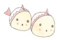
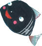
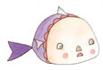
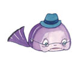

“Böyle amaçsızca yüzmekten bıktım usandım. Başka yerlerde neler olduğunu öğrenmek istiyorum. Bu düşünceleri kafama bir başkasının soktuğunu sanabilirsin, ama ben uzunca bir süredir kendim düşünüyorum bunları. Arkadaşlarımdan da bazı şeyler öğrendim elbette; örneğin, birçok balığın yaşlanınca, hayatta hiçbir şey yapmadık, hayatımızı boşa geçirdik, diye yakındıklarını biliyorum. Durmadan sızlanıp dururlar. Ben yaşamanın nasıl bir şey olduğunu öğrenmek istiyorum; durmadan aynı şeyleri yapmak, yaşlanana kadar başka bir şey yapmadan yaşamak olamaz; dünyada yaşamanın anlamı bundan daha fazla olmalı!”

Küçük Kara Balık bunları soluk almadan sıraladıktan sonra annesi,
“Sevgili yavrum,” demiş, “sana ne oldu böyle? Dünya, dünya diye tutturdun. Ne demek istiyorsun? Dünya bizim olduğumuz yerdir, yaşam da bizim burada sürdürdüğümüz şeydir.”
Tam o sırada iri bir balık kapılarına gelip anneyi selamlamış.
“Merhaba, yavrunla neler konuşuyorsun böyle? Bugün dışarı çıkmıyor musunuz?”
Komşusunun sesini duyunca, Küçük Kara Balık’ın annesi dışarı koşup,

“Zaman nasıl da değişti!” demiş ona, “şimdi çocuklar büyüklerine öğretmenlik taslıyorlar!”
“Ne demek istiyorsun?” diye sormuş komşusu, şaşkınlıkla.
“Bu ufaklık ne yapmak istiyor, biliyor musun?” demiş anne balık. “Dünyada neler olup bittiğini görmek istediğini söylüyor. Şu lafa bak!”
“Seni doğduğun günden beri tanırım yavrum,” demiş komşu, Küçük Kara Balık’a. “Ne zamandan beri bilim adamı ya da filozof kesildin sen? Hem neden bize bundan hiç söz etmedin?”
“Bilim adamı ve filozofun ne demek olduğunu bilmiyorum,” diye yanıtlamış onu Küçük Kara Balık.
“Ben yalnızca sağa sola dolaşıp durmaktan bıktım, can sıkıntısı içinde yüzmek istemiyorum artık, bir nedeni olmadan mutlu olmak da istemiyorum; günün birinde gözlerimi açıp hepiniz gibi yaşlandığımı, ama hâlâ aynı balık olduğumu, ilk başta bildiğimden fazla bir şey bilmediğimi görmek istemiyorum!”
“Saçma sapan konuşma!” demiş büyük balık.
Annesi de,
“Biricik yavrumun böyle olacağı hiç aklıma gelmezdi!” demiş. “Onu kandıranın kim olduğunu bir bilsem!”

“Beni kandıran filan yok,” diye itiraz etmiş Küçük Kara Balık. “Benim kendi beynim var, düşünebilirim; gözlerim de var, görebilirim...”
Büyük balık, anne balığa dönüp,
“Kıvrıla büküle yürüyen o salyangozu anımsıyor musun?” demiş.
“Evet, anımsıyorum,” demiş anne balık. “Yavrumun peşinden hiç ayrılmazdı. Ah, Allah onun cezasını verir inşallah!”
Küçük Kara Balık dehşete kapılmış. “Sus anneciğim,” demiş, “o benim arkadaşımdı.”
“Balıklarla salyangozların arkadaş olduğu duyulmuş şey değil,” diye yanıtlamış onu annesi.
“Düşman olduklarını da duymadım ben,” demiş Küçük Kara Balık üzüntülü bir sesle. “Ama siz onu ortadan kaldırdınız.”
“Geçmişi unutalım,” demiş komşu balık.
“Bu konuyu sen açtın,” demiş anne balık. “Keşke onu öldürseydik. Ortalıkta dolaşıp söylediği o kötü şeyleri de anımsıyor musun?”
“O zaman beni de öldürseydin!” diye haykırmış Küçük Kara Balık. “Çünkü ben de onun söylediklerini söyledim.”
Bu tartışma öteki balıkların da ilgisini çekmiş. Küçük Kara Balık’ın söylediği şeyler onları çok kızdırmış.

Yaşlıca balıklardan biri,
“Bu söylediklerini hoşgöreceğimizi sanma,” demiş.
Bir başkası da,
“Bunun aklını başına getirmek gerek!” demiş.
“Çekilip gidin!” demiş anne balık, “yavruma elinizi sürmeye kalkmayın sakın!”
Balıklardan biri anne balığa dönmüş, kınarcasına,
“Çocuklarına terbiye vermezsen neler olurmuş gör bakalım!” demiş.
Büyük balık başını sallayıp,
“Derenin bu bölümünde yaşadığım için utanç duyuyorum,” diye söylenmiş.
Bir başkası da,
“İşler sarpa sarmadan, bu küçük baş belasını da, o yaşlı salyangozun gittiği yere gönderelim!” demiş.